| Name | Image | Rarity | Type | Cost | Description |
|---|
| Bad Breath | 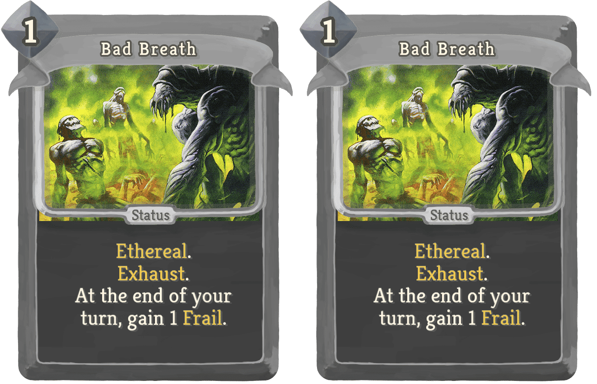 | Special | Status | 1 | Ethereal. Exhaust. At the end of your turn, gain 1 Frail. |
| Bad Breath | | Special | Status | 1 | Ethereal. Exhaust. At the end of your turn, gain 1 Frail. |
| Bad Breath | | Special | Status | 1 | Ethereal. Exhaust. At the end of your turn, gain 1 Frail. |
| Bad Breath | | Special | Status | 1 | Ethereal. Exhaust. At the end of your turn, gain 1 Frail. |
| Bad Breath | | Special | Status | 1 | Ethereal. Exhaust. At the end of your turn, gain 1 Frail. |
| Bad Breath | | Special | Status | 1 | Ethereal. Exhaust. At the end of your turn, gain 1 Frail. |
| Bad Breath | | Special | Status | 1 | Ethereal. Exhaust. At the end of your turn, gain 1 Frail. |
| Bad Breath | | Special | Status | 1 | Ethereal. Exhaust. At the end of your turn, gain 1 Frail. |
| Bad Breath | | Special | Status | 1 | Ethereal. Exhaust. At the end of your turn, gain 1 Frail. |
| Bad Breath | | Special | Status | 1 | Ethereal. Exhaust. At the end of your turn, gain 1 Frail. |
| Bedeviled |  | Special | Status | 3 | Exhaust. |
| Bedeviled | | Special | Status | 3 | Exhaust. |
| Bedeviled | | Special | Status | 3 | Exhaust. |
| Bedeviled | | Special | Status | 3 | Exhaust. |
| Bedeviled | | Special | Status | 3 | Exhaust. |
| Bedeviled | | Special | Status | 3 | Exhaust. |
| Bedeviled | | Special | Status | 3 | Exhaust. |
| Bedeviled | | Special | Status | 3 | Exhaust. |
| Bedeviled | | Special | Status | 3 | Exhaust. |
| Bedeviled | | Special | Status | 3 | Exhaust. |
| Boon | 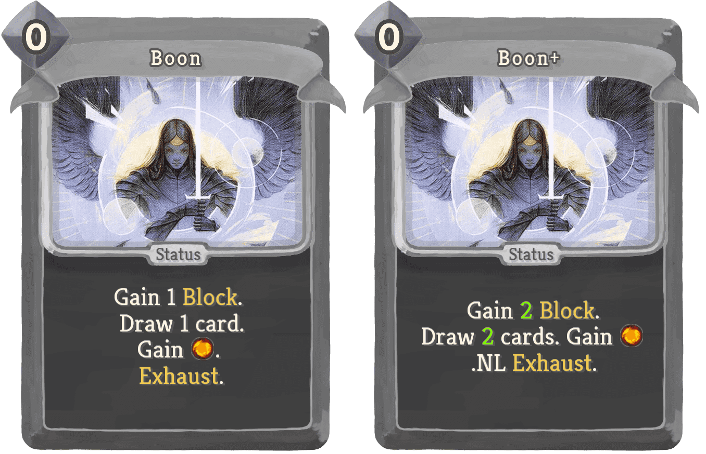 | Special | Status | 0 | Gain 1 (2) Block. Draw 1 (!M!) card(s). (not) Gain [E]. (.NL) Exhaust. |
| Celestial Aegis | 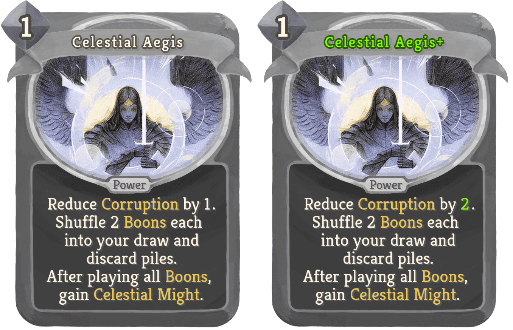 | Special | Power | 1 | Reduce corruptthespire:Corruption by 1 (2). Shuffle 2 Boons each into your draw and discard piles. After playing all Boons, gain corruptthespire:Celestial Might. |
| Contagion |  | Special | Status | 1 | Exhaust. At the end of your turn, add a Contagion to your discard pile. |
| Contagion | | Special | Status | 1 | Exhaust. At the end of your turn, add a Contagion to your discard pile. |
| Contagion | | Special | Status | 1 | Exhaust. At the end of your turn, add a Contagion to your discard pile. |
| Contagion | | Special | Status | 1 | Exhaust. At the end of your turn, add a Contagion to your discard pile. |
| Contagion | | Special | Status | 1 | Exhaust. At the end of your turn, add a Contagion to your discard pile. |
| Contagion | | Special | Status | 1 | Exhaust. At the end of your turn, add a Contagion to your discard pile. |
| Contagion | | Special | Status | 1 | Exhaust. At the end of your turn, add a Contagion to your discard pile. |
| Contagion | | Special | Status | 1 | Exhaust. At the end of your turn, add a Contagion to your discard pile. |
| Contagion | | Special | Status | 1 | Exhaust. At the end of your turn, add a Contagion to your discard pile. |
| Contagion | | Special | Status | 1 | Exhaust. At the end of your turn, add a Contagion to your discard pile. |
| Nudge | 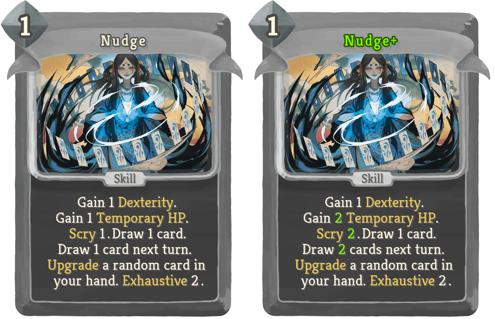 | Special | Skill | 1 | Gain 1 Dexterity. Gain 1 (2) Temporary_HP. Scry 1 (2). Draw 1 card. Draw 1 (2) card(s) next turn. Upgrade a random card in your hand. Exhaustive 2. |
| Shimmering Shield | 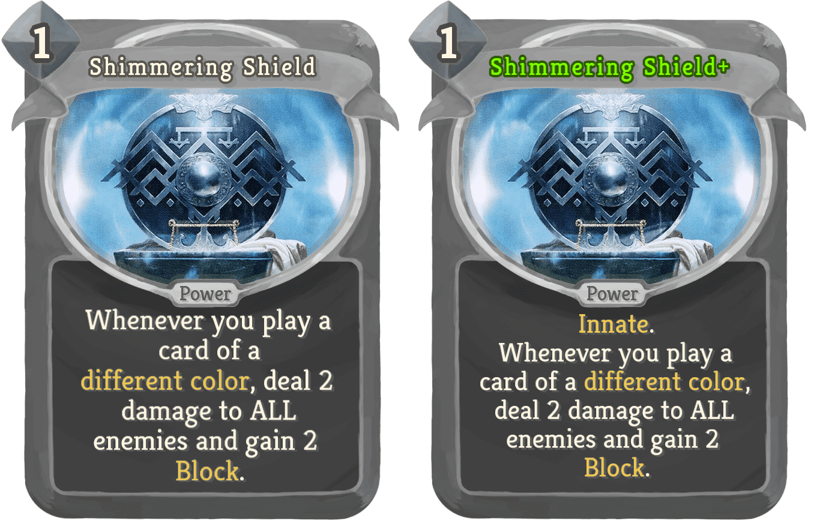 | Special | Power | 1 | (Innate.)Whenever you play a card of a corruptthespire:different color, deal 2 damage to ALL enemies and gain 2 Block. |
| The Fool |  | Special | Skill | 1 | Choose one: Draw 3 (4) cards and draw 1 less card next turn, or draw 3 (4) cards next turn. Exhaust. |
| Wheel of Fortune | 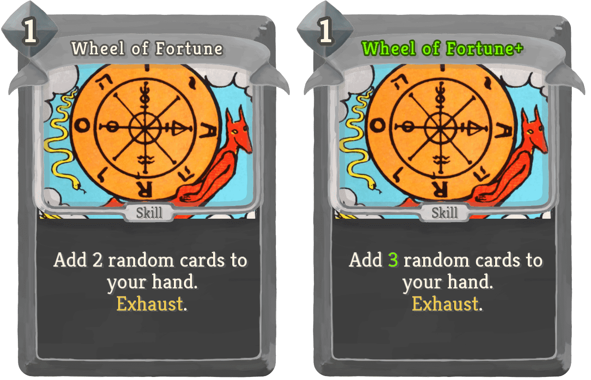 | Special | Skill | 1 | Add 2 (3) random cards to your hand. Exhaust. |
| Fated | 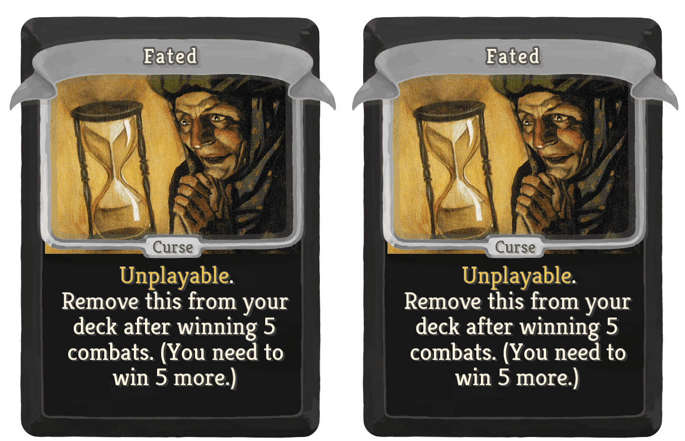 | Special | Curse | | Unplayable. Remove this from your deck after winning 5 combats. (You need to win 5 more.) |
| Annihilation Ray |  | Special | Attack | 2 | Ethereal. Deal 20 (24) damage. Gain 4 (5) Temporary_HP. When this card is Exhausted, add a random corrupted card to your hand. |
| Black Omen |  | Special | Power | 1 | At the start of your turn, apply 3 (4) corruptthespire:Abysstouched to ALL enemies. |
| Blasphemous Hymn | 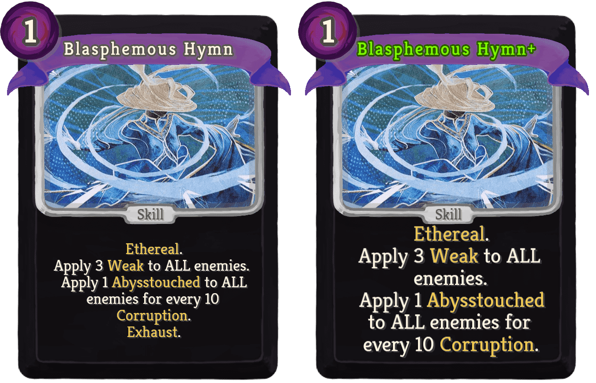 | Special | Skill | 1 | Ethereal. Apply 3 Weak to ALL enemies. Apply 1 corruptthespire:Abysstouched to ALL enemies for every 10 corruptthespire:Corruption. Exhaust. (not Exhaust.) |
| Blaze from Beyond | 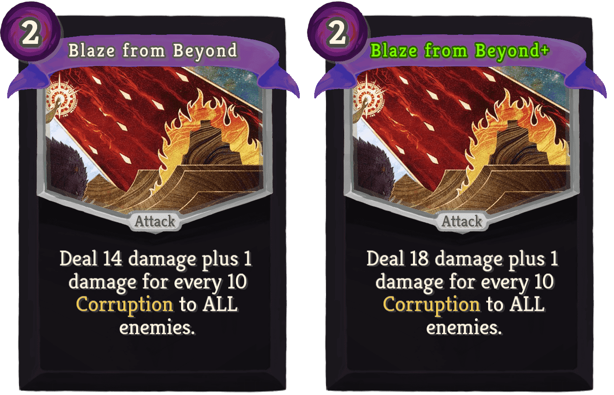 | Special | Attack | 2 | Deal 14 (18) damage plus 1 damage for every 10 corruptthespire:Corruption to ALL enemies. |
| Condemn |  | Special | Attack | 1 | Deal 13 (15) damage. Enemy loses HP equal to 4 (6)% of their Max HP. Gain 1 corruptthespire:Corruption. |
| Corrupted Form |  | Special | Power | 3 | Ethereal. (not Ethereal.) Gain 5 corruptthespire:Corruption. At the end of your turn, deal 30% corruptthespire:Corruption damage to ALL enemies. |
| Dark Lore | 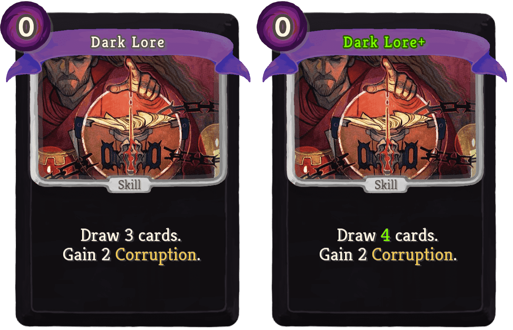 | Special | Skill | 0 | Draw 3 (4) cards. Gain 2 corruptthespire:Corruption. |
| Death Touch | 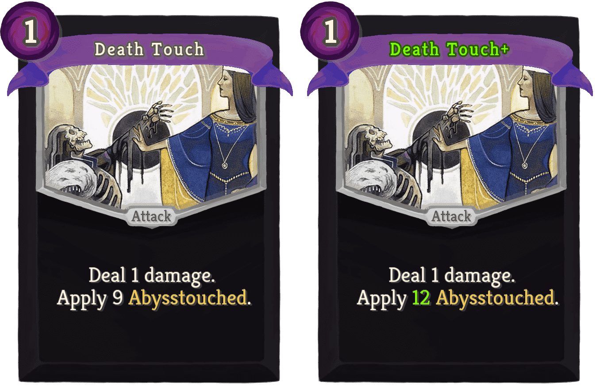 | Special | Attack | 1 | Deal 1 damage. Apply 9 (12) corruptthespire:Abysstouched. |
| Devil's Bargain | 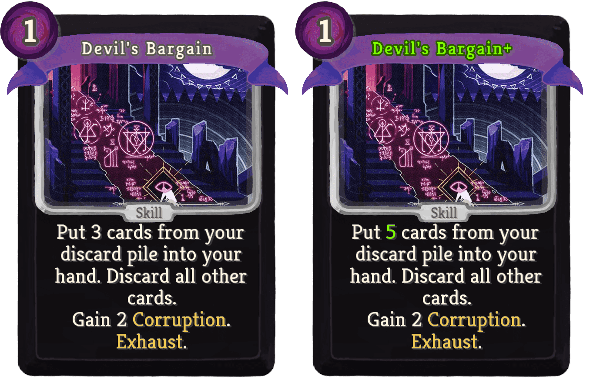 | Special | Skill | 1 | Put 3 (5) cards from your discard pile into your hand. Discard all other cards. Gain 2 corruptthespire:Corruption. Exhaust. |
| Divine Strike | 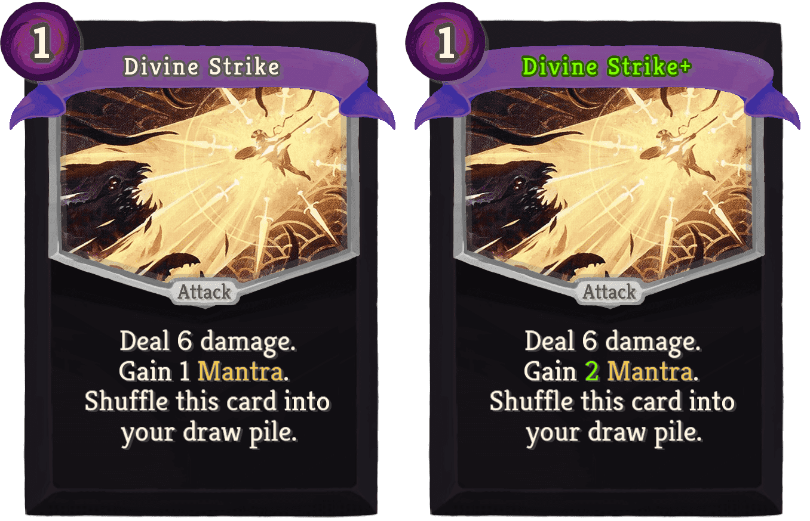 | Special | Attack | 1 | Deal 6 damage. Gain 1 (2) Mantra. Shuffle this card into your draw pile. |
| Drain Life | 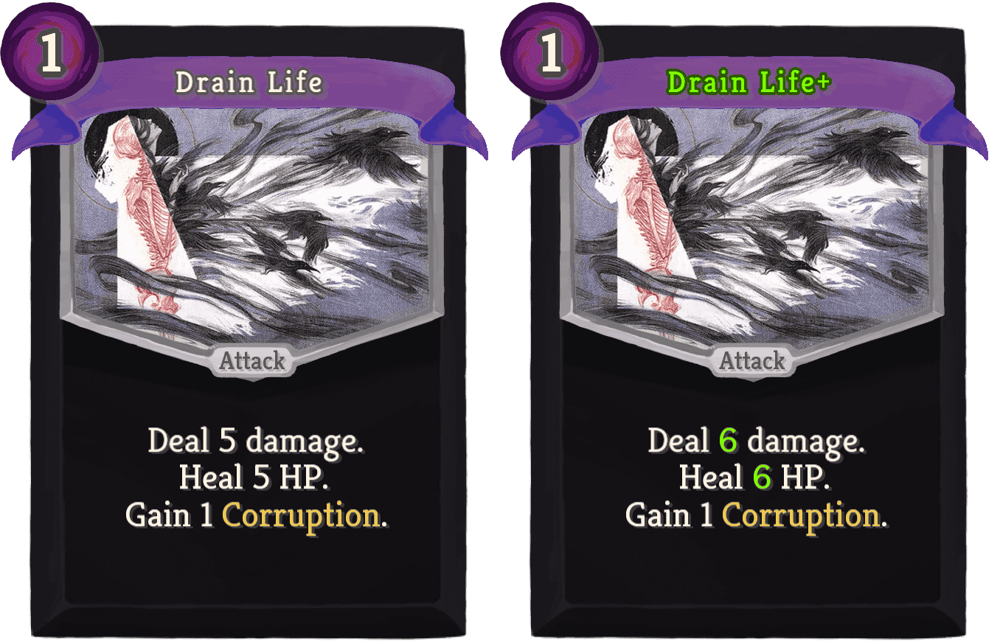 | Special | Attack | 1 | Deal 5 (6) damage. Heal 5 (6) HP. Gain 1 corruptthespire:Corruption. |
| Eldritch Fire | 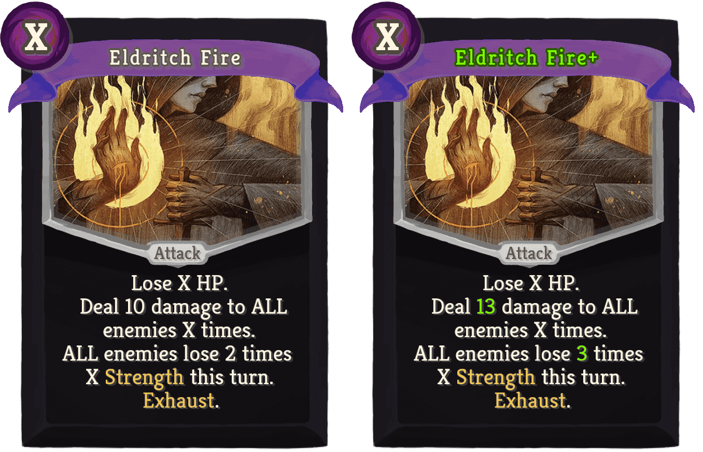 | Special | Attack | X | Lose X HP. Deal 10 (13) damage to ALL enemies X times. ALL enemies lose 2 (3) times X Strength this turn. Exhaust. |
| Eldritch Insight | 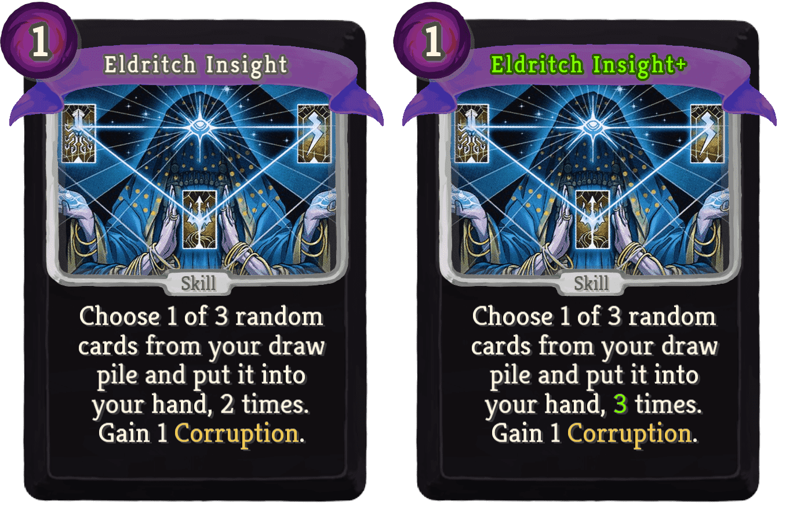 | Special | Skill | 1 | Choose 1 of 3 random cards from your draw pile and put it into your hand, 2 (3) times. Gain 1 corruptthespire:Corruption. |
| Essence Rip | 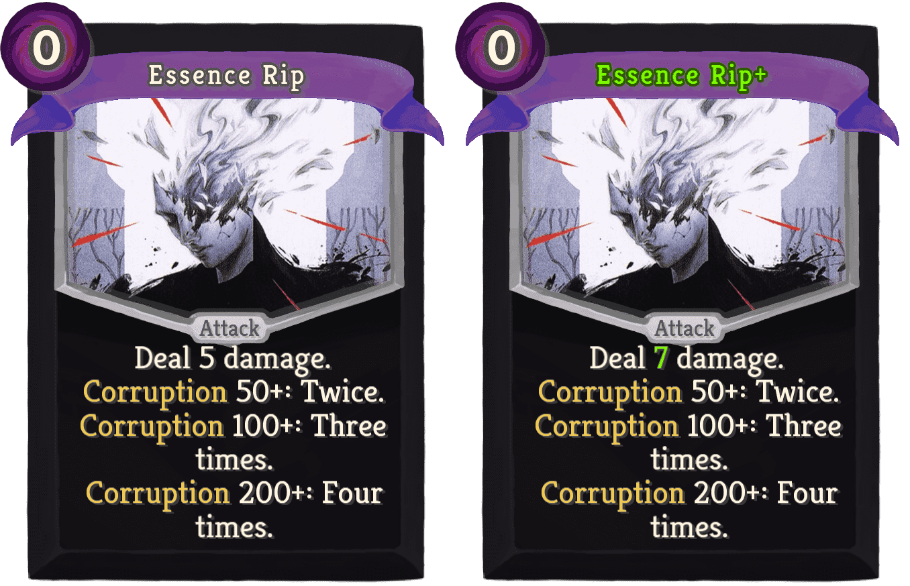 | Special | Attack | 0 | Deal 5 (7) damage. corruptthespire:Corruption 50+: Twice. corruptthespire:Corruption 100+: Three times. corruptthespire:Corruption 200+: Four times. |
| Fragmentize | 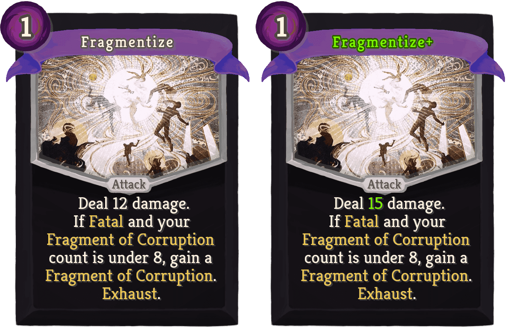 | Special | Attack | 1 | Deal 12 (15) damage. If Fatal and your corruptthespire:Fragment of Corruption count is under 8, gain a corruptthespire:Fragment of Corruption. Exhaust. |
| Guiding Star |  | Special | Power | 1 | Gain 1 Focus. Gain 1 Orb slot.(Choose one: Channel 1 Lightning, Frost, or Dark.) |
| Hidden Potential | 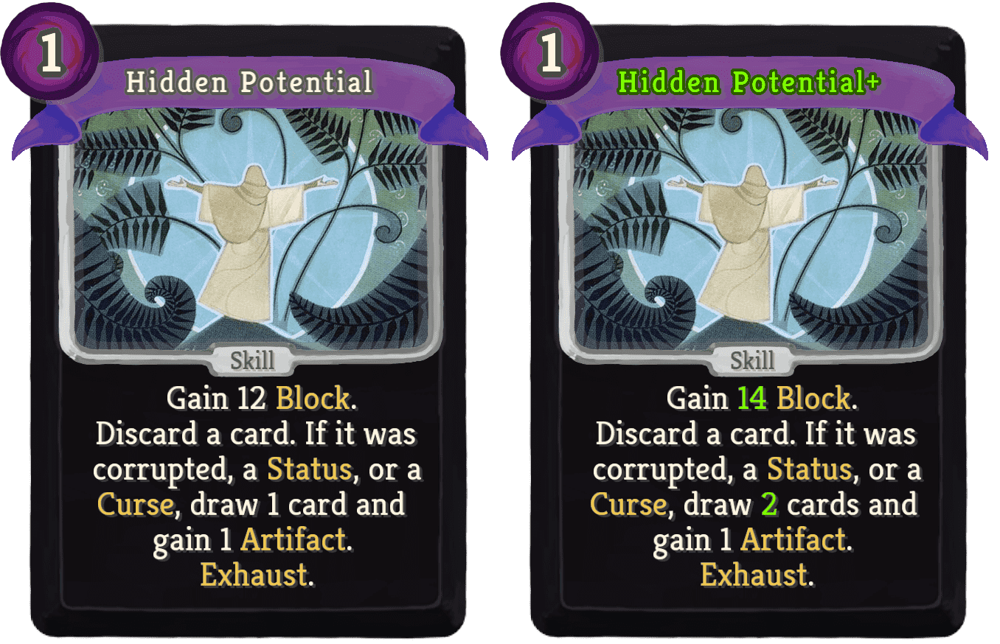 | Special | Skill | 1 | Gain 12 (14) Block. Discard a card. If it was corrupted, a Status, or a Curse, draw 1 (2) card(s) and gain 1 Artifact. Exhaust. |
| Infernal Bargain |  | Special | Power | 1 | Now and each turn, choose one that hasn't already been chosen: Gain 10 (13) Block. Gain 2 (3) Strength. Draw 2 (3) cards. Take 20 damage at the end of your turn. |
| Inner Flame | 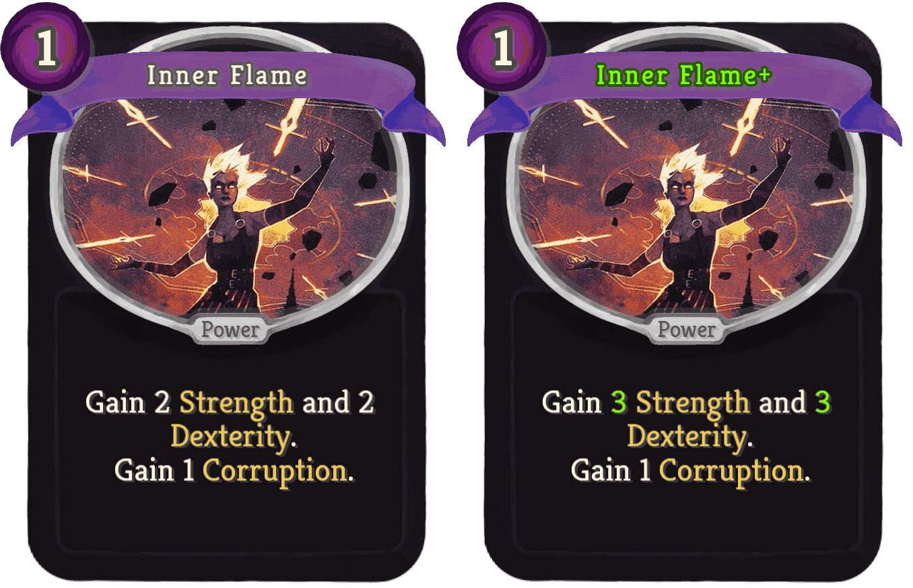 | Special | Power | 1 | Gain 2 (3) Strength and 2 (3) Dexterity. Gain 1 corruptthespire:Corruption. |
| Journey Beyond | 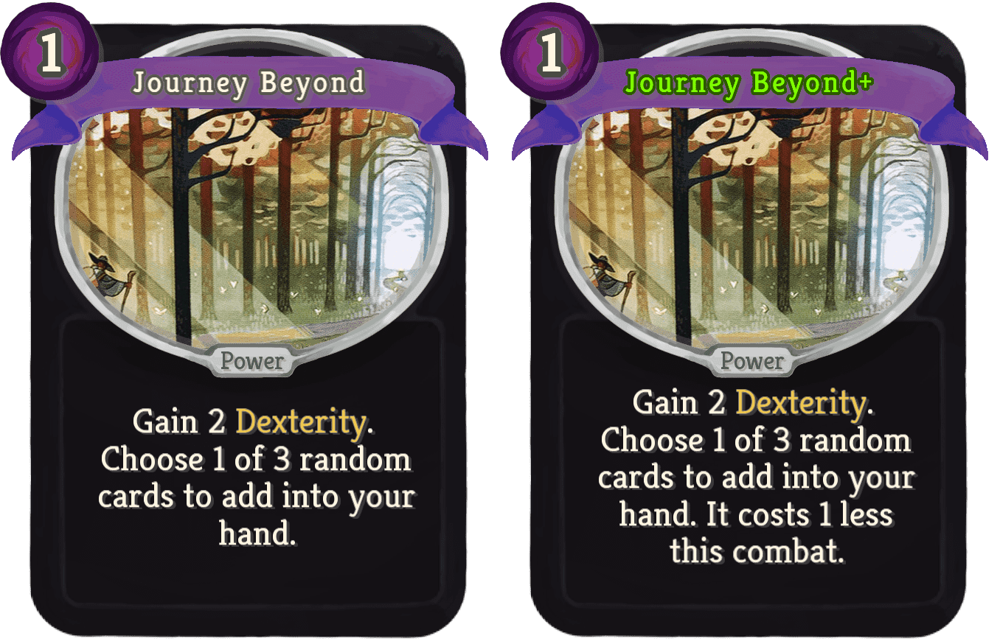 | Special | Power | 1 | Gain 2 Dexterity. Choose 1 of 3 random cards to add into your hand. (It costs 1 less this combat.) |
| Lightning Blood |  | Special | Skill | 1 | Lose 1 HP. Gain 3 Strength. Gain 3 corruptthespire:Metallicize. Exhaust. (not Exhaust.) |
| Lord of Nightmare |  | Special | Power | 2 (1) | Whenever you draw a corrupted card, draw a card. Whenever you play a corrupted card, gain 6 Block. |
| Maniacal Rage |  | Special | Power | 1 | Gain 6 (9) Temporary_HP. Gain Strength equal to the larger of your corruptthespire:common debuff stacks or the number of Status cards in your draw and discard. corruptthespire:Corruption 150+: Gain 3 Temporary_HP. |
| Mask of Shards | 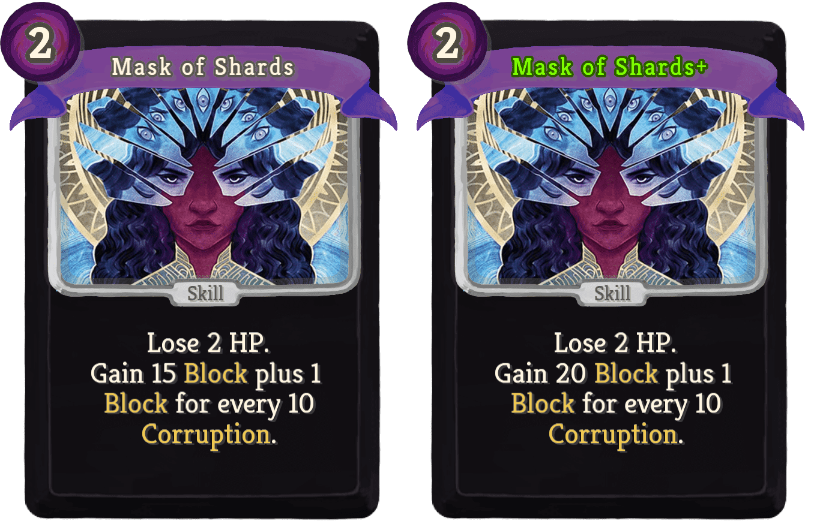 | Special | Skill | 2 | Lose 2 HP. Gain 15 (20) Block plus 1 Block for every 10 corruptthespire:Corruption. |
| Night's Whisper | 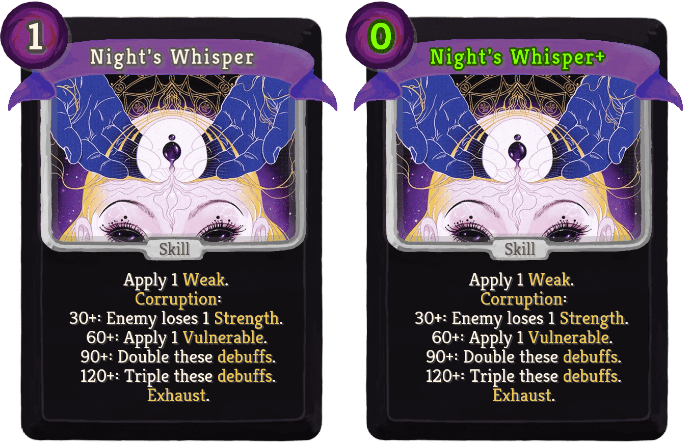 | Special | Skill | 1 (0) | Apply 1 Weak. corruptthespire:Corruption: 30+: Enemy loses 1 Strength. 60+: Apply 1 Vulnerable. 90+: Double these debuffs. 120+: Triple these debuffs. Exhaust. |
| Profane Shield | 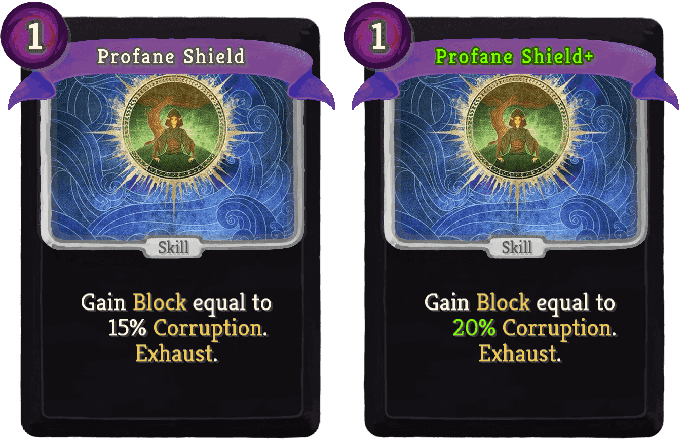 | Special | Skill | 1 | Gain Block equal to 15 (20)% corruptthespire:Corruption. Exhaust. |
| Retribution |  | Special | Attack | 1 | Deal 8 damage. For each debuff on you (and the enemy), deal 8 damage again. |
| Shadow and Flame |  | Special | Attack | 1 | Deal 10 (12) damage. Apply 2 (3) Vulnerable. Apply 2 (3) corruptthespire:Abysstouched. Gain 2 Frail. |
| Unearth |  | Special | Skill | 1 | Scry 2 (4). Put a card of a corruptthespire:different color from your discard pile into your hand. If you cannot, draw a card. |
| Unnatural Order | 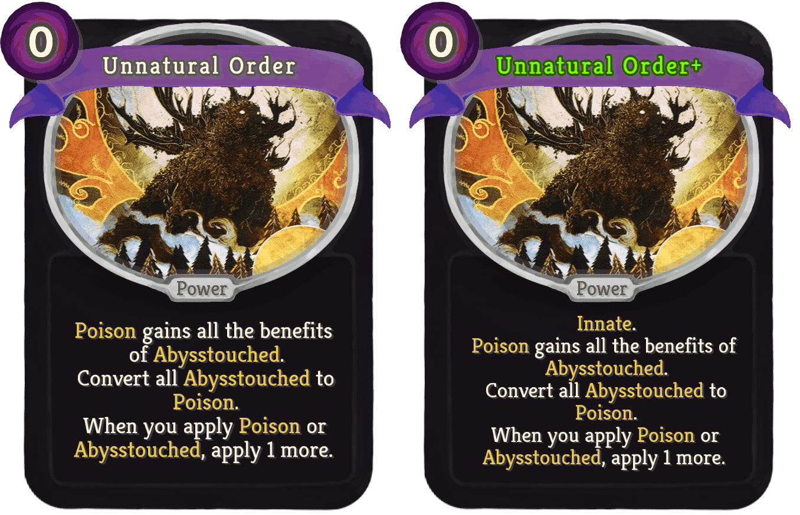 | Special | Power | 0 | (Innate.)Poison gains all the benefits of corruptthespire:Abysstouched. Convert all corruptthespire:Abysstouched to Poison. When you apply Poison or corruptthespire:Abysstouched, apply 1 more. |
| Void Armor |  | Special | Skill | 2 | Gain 18 (23) Block. Apply 1 (2) Weak to ALL enemies. Add a Void into your discard pile. |
| Wicked Ward | 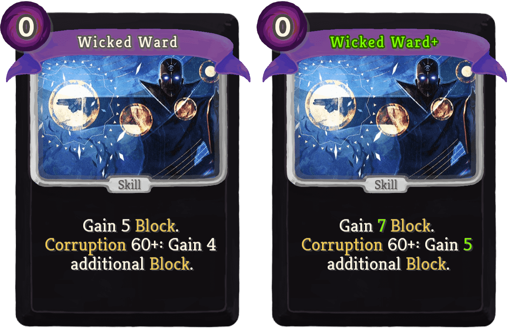 | Special | Skill | 0 | Gain 5 (7) Block. corruptthespire:Corruption 60+: Gain 4 (5) additional Block. |
| Name | Image | Tier | Pool | Description | Flavor |
|---|
| Abyssal Orb |  | Special | | At the start of your turn, apply 1Abysstouched to a random enemy. Whenever you apply Abysstouched, apply 1 additional Abysstouched. | It gazes back at you. |
| Bag of Tricks |  | Special | | At the start of each combat, gain 1AfterImage. Draw 1 less card on the first turn of each combat. | Trick or treat! |
| Bean Sprouts |  | Special | | Whenever you gain Frail or Vulnerable, or lose Dexterity due to an enemy, gain 1 Strength and 5Block. You gain this even if Turnip prevents the Frail. | They go well with everything. |
| Black Card | 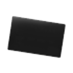 | Special | | Shop prices are reduced by 30%. Whenever you enter a shop room, gain 2Corruption. | For the truly elite, by invitation only. |
| Blighted Spirefruit |  | Special | | Upon pickup, reduce your Max HP by 4. Start each combat with 2Strength. | Infected with the Spireblight, but maybe eat it anyway? |
| Bottled Prism | | Special | | Upon pickup, choose a card of a different color. Start each combat with this card in your hand. | The interaction of the bottle and the prism inside it creates fascinating rainbows. |
| Bottomless Mead Horn | 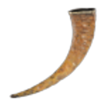 | Special | | Based on the size of your deck: 20+: At the start of combat, gain 1Strength and 1Dexterity.30+: At the start of combat, Exhaust1Strike and1Defend in your draw pile. 40+: At the start of your turn, draw 1 additional card. | Drink the sea. |
| Burning Ring | | Special | | At the start of each combat, draw 1 additional card. At the end of combat, heal 3 HP. | Snake design. Maintains a flow of fresh blood. |
| Chthonic Blessing | 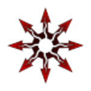 | Special | | Gain 15Gold after every non-Boss combat. Gain a relic after every 7 non-Boss combats. Future card rewards have 1 less card to choose from. | The riches of the land, accumulated and hoarded. |
| Corrupted Egg | | Special | | Cards in rewards have +33% chance to be upgraded. Gain 1Corruption every time you gain an upgraded card. | Whatever life there once was here has been overtaken by corruption. |
| Corrupted Toolbox | | Special | | At the start of each combat, choose 1 of 3 random corrupted cards and add the chosen card into your hand. | Everyone has a price. |
| Deck of Many Fates |  | Special | | Add a random card to your hand at the start of one of the first three turns of combat, chosen randomly. The card will be common if on turn one, uncommon if on turn two, and rare if on turn three. | The intricately drawn cards feel filled with omens and portents. |
| Doom Sight | | Special | | At the start of your 3rd turn, draw 1 card and apply 1Weak to ALL enemies. | There is a future in which I can see only mist and a single shadow. |
| Doom Wing |  | Special | | Whenever you play a Power card, gain 2Thorns. | There is a future in which I can see only mist and a single shadow. |
| Fragment of Corruption | 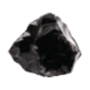 | Special | | Small fragment of corrupted Spirestone. Can be used at corrupted Rest Sites. | Both danger and power. |
| Gnostic Blessing | | Special | | At the start of your turn, draw 1 additional card. At the start of each combat, gain 2Metallicize. Future card rewards have 1 less card to choose from. | The pursuit of knowledge, relentless and deranged. |
| Gohei |  | Special | | Whenever you would receive 10 or more unblocked Attack damage, receive 5 less and add a Wound to your discard pile. | This tasseled rod cleanses and protects. |
| Hand of Midas | 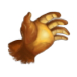 | Special | | Gain [E] at the start of your turn. Elites drop 175Gold instead of a relic. | Makes it hard to eat and drink. |
| Harbinger's Claw |  | Special | | Corruption increases your attack damage by the same percent that it increases enemy attack damage. | The claw of an otherworldly horror. |
| Harbinger's Skull |  | Special | | If you do not play any Powers during your turn, gain 3Block at the end of your turn and draw 1 additional card at the start of your next turn. | The skull of an otherworldly horror. |
| Heavy Sword |  | Special | | At the start of your 4th turn, gain 3Strength. | It was too big to be called a sword. Massive, thick, heavy, and far too rough. Indeed, it was a heap of raw iron. |
| Hideous Statue |  | Special | | After every 3 combats, receive a corrupted potion reward. | A large stone statue of a creature you hope to never see. |
| Mask of Nightmares | | Special | | Whenever you enter a corrupted room, raise your Max HP by 2. | Every glimpse is disturbing, in new way each time. |
| Mystifying Timepiece | | Special | | If you do not play any cards that cost 0 during your turn, draw 1 additional card at the start of your next turn. | The time it keeps doesn't correspond to any system you know. |
| Obsidian Shovel |  | Special | | You can now gain corrupted relics at corrupted Rest Sites. | Made of a special material that absorbs corruption. |
| Ominous Bracelet |  | Special | | Reduce Corruption gained from entering rooms by 2. Corrupted events, treasures, and shops no longer give the lowestrewardoutcomes. | A ward that guides its bearer to greatness. |
| Oozing Heart | | Special | | At the start of elite combats, heal 16 HP. Whenever you climb a floor, if you are above 1 HP, lose 1 HP. | Slowly leaks, but beats rapidly when danger is near. |
| Rusted Orichalcum |  | Special | | At the start of your first 3 turns, gain 11 Block. At the start of combat, gain 3Constricted. | But this metal is supposed to be indestructible.... |
| Shimmering Fan |  | Special | | When you play cards of 3 different colors in a turn, gain 7Block. | The fan responds to a mix of energies in air around it by defending its bearer. |
| Slime Shield |  | Special | | At the start of each combat, gain 1Artifact,1Metallicize, and 1PlatedArmor, and shuffled 1Slimed into your draw pile. | Good defense, but very slippery. |
| Transcendent Eye | | Special | | At the start of your 2nd turn, Scry1 and draw 1 card. | The creature's eye still seeks out prey. |
| Transcendent Pet | | Special | | At the start of your 2nd turn, apply 1Vulnerable and 4Abysstouched to ALL enemies. | Surprisingly cute, in a grotesque sort of way. |
| Unreliable Charm | | Special | | At the start of each combat, if the floor number is even, gain 1Strength and 1Buffer. If the floor number is odd, gain 1Dexterity and 1Thorns. | Sometimes it works. |
{kind=link}
{kind=link}
{kind=link}
{kind=link}
{kind=link}
{kind=link}
{kind=link}
{kind=link}
{kind=link}
{kind=link}
{kind=link}
{kind=link}
{kind=link}
{kind=link}
{kind=link}
{kind=link}
{kind=link}
{kind=link}
{kind=link}
{kind=link}
{kind=link}
{kind=link}
{kind=link}
{kind=link}
{kind=link}


{kind=link}